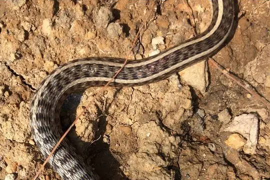
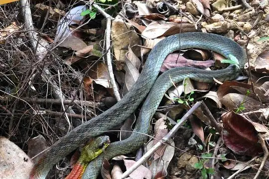

Snakes of Tripura
A state of India
12 living snake species are recorded in Tripura, a state of India, in SnakeList's data: 5 venomous and 7 non-venomous, from 3 families. 57 more are possible: recorded in India without state or union territory detail.
- 12living species
- 5venomous
- 7non-venomous
- 3families
- 57more possible
Tripura is a state of India. SnakeList records where snakes live by state or union territory, not by exact spot, so a species counted here may live in only part of it. The counts are unique living species; fossils, extinct species and introduced snakes are listed apart. All snakes of India.
The 12 living species recorded in Tripura
Every living snake species SnakeList records in Tripura. Each is recorded somewhere in the state, not necessarily all over it.
- Banded Krait Bungarus fasciatus venomous
- Bindee Keelback Rhabdophis bindi venomous
- Buff Striped Keelback Amphiesma stolatum
- Diard's Blindsnake Argyrophis diardii
- Eastern Cat Snake Boiga gocool venomous
- Green Trinket Snake Gonyosoma prasinum
- Indo-Chinese Rat Snake Ptyas korros
- Monocled Cobra Naja kaouthia venomous
- Northern Red-necked Keelback Rhabdophis helleri venomous
- Oriental Ratsnake Ptyas mucosa
- Radiated Ratsnake Coelognathus radiatus
- Zaw's Wolf Snake Lycodon zawi
No snake here matches that.
Possible here: country-level records only
SnakeList records these 57 species in India without saying in which state or union territory, so each may or may not live in Tripura. They are not counted among the species recorded here.
- Andaman Keelback Fowlea tytleri
- Anomalous Sea Snake Hydrophis anomalus venomous
- Assam Kukri Snake Oligodon catenatus
- Banded Racer (fasciolata) Argyrogena fasciolata
- Belcher's Sea Snake Hydrophis belcheri venomous
- Belgaum Worm Snake Indotyphlops exiguus
- Bighead Sea Snake Hydrophis annandalei venomous
- Blue Krait Bungarus candidus venomous
- Braid Snake Platyceps ladacensis
- Brook's Sea Snake Hydrophis brookii venomous
- Brown-speckled Whipsnake Ahaetulla pulverulenta
- Burmese Python Python bivittatus
- Cave Racer Elaphe taeniura
- Chinese Keelback Water Snake Trimerodytes percarinatus
- Colombo Wolf Snake Lycodon anamallensis
- Common Wolf Snake (capucinus) Lycodon capucinus
- Daudin's Bronzeback Dendrelaphis tristis
- Dwarf Seasnake Hydrophis caerulescens venomous
- Eastern Russel's Viper Daboia siamensis venomous
- Gray's Kukri Snake Oligodon dorsalis
- Greater Seasnake Hydrophis major venomous
- Green Vine Snake (nasuta) Ahaetulla nasuta
- Hardwick's Water Snake Homalopsis hardwickii
- Horseshoe Pitviper Trimeresurus strigatus venomous
- Indian Coral Snake Calliophis melanurus venomous
- Indian Smooth Snake Coronella brachyura
- Kerala Burrowing Snake Plecturus aureus
- Kloss' Sea Snake Hydrophis klossi venomous
- Large-headed Carpet Viper Echis megalocephalus venomous
- Light-barred Kukri Snake Oligodon albocinctus
- Linne's Water Snake Homalopsis buccata
- Loos Snake Oligodon taeniolatus
- Loveridge's Worm Snake Indotyphlops loveridgei
- Nagarkot Kukri Snake Oligodon erythrogaster
- Nicobar Island Keelback Hebius nicobariensis
- Nilgiri Burrowing Snake Plectrurus perroteti
- Nilgiri Burrowing Snake Plecturus perroteti
- Peters' Sea Snake Hydrophis bituberculatus venomous
- Rainbow Mud Snake Enhydris enhydris
- Rough-tailed Sand Boa Eryx conicus
- Shore Pit Viper Trimeresurus purpureomaculatus venomous
- Spotted Slug Snake Pareas macularius
- Striped Sea Snake Hydrophis fasciatus venomous
- Tentacled Snake Erpeton tentaculatum
- Travancore Kukri Snake Oligodon travancoricus
- Vellore Bridal Snake Lycodon nympha
- White-lipped Pitviper Trimeresurus albolabris venomous
- Yellow-lipped Sea Krait Laticauda colubrina venomous
- Yellow-Lipped Sea Krait Laticauda saintgironsi venomous
- Yellow-lipped Sea Snake Laticauda frontalis venomous
- Yunnan Pit Viper Trimeresurus yunnanensis venomous
- Argyrogena vittacaudata
- Boiga whitakeri venomous
- Hydrophis pachycercos venomous
- Pseudoboa krait
- Sinomicrurus nigriventer venomous
- Trimeresurus macrolepis venomous
No snake here matches that.
Venomous and non-venomous
Venomous: 5 of 12Non-venomous: 7
4 are listed by SnakeList as dangerous to people: Banded Krait Bungarus fasciatus, Bindee Keelback Rhabdophis bindi, Monocled Cobra Naja kaouthia, Northern Red-necked Keelback Rhabdophis helleri.
The other venomous species has mild venom: no serious bites to people are documented for it.
Snake families
Living species recorded here, by family.
Biggest cities
The biggest cities in Tripura from SnakeList’s city list, biggest first. SnakeList has no records for the cities themselves.
- Agartala
Nearby states
The closest other parts of India in SnakeList.
Most recorded worldwide
A global ranking, not a local one. These are the species here with research-grade iNaturalist records in the most places across their whole range (worldwide records). SnakeList has no counts of records within Tripura, so this says nothing about which snakes are commonest here.
 Oriental RatsnakePtyas mucosa
Oriental RatsnakePtyas mucosa Indo-Chinese Rat SnakePtyas korros
Indo-Chinese Rat SnakePtyas korros
Buff Striped KeelbackAmphiesma stolatum Radiated RatsnakeCoelognathus radiatus
Radiated RatsnakeCoelognathus radiatus Banded KraitBungarus fasciatus
Banded KraitBungarus fasciatus
Northern Red-necked KeelbackRhabdophis helleri Monocled CobraNaja kaouthia
Monocled CobraNaja kaouthia Diard's BlindsnakeArgyrophis diardii
Diard's BlindsnakeArgyrophis diardii
Who described them
The scientists who first described the species above, and when.
- Oriental Ratsnake Ptyas mucosa -
- Indo-Chinese Rat Snake Ptyas korros -
- Buff Striped Keelback Amphiesma stolatum -
- Radiated Ratsnake Coelognathus radiatus -
- Banded Krait Bungarus fasciatus -
- Northern Red-necked Keelback Rhabdophis helleri -
- Monocled Cobra Naja kaouthia -
- Diard's Blindsnake Argyrophis diardii -
Names and dates come from SnakeList’s reviewed species accounts; the others are looked up on Wikidata (CC0) when this page opens.